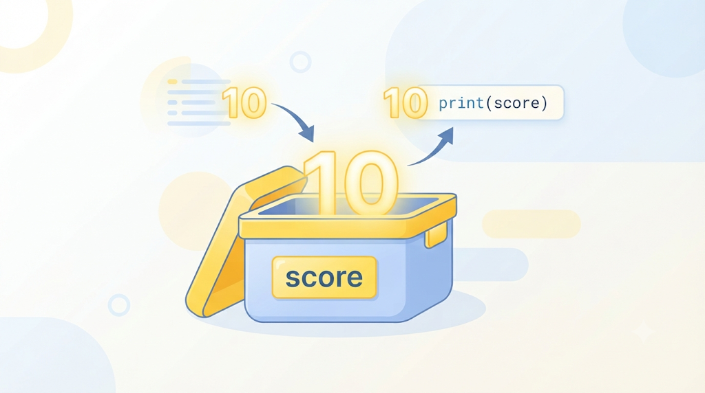
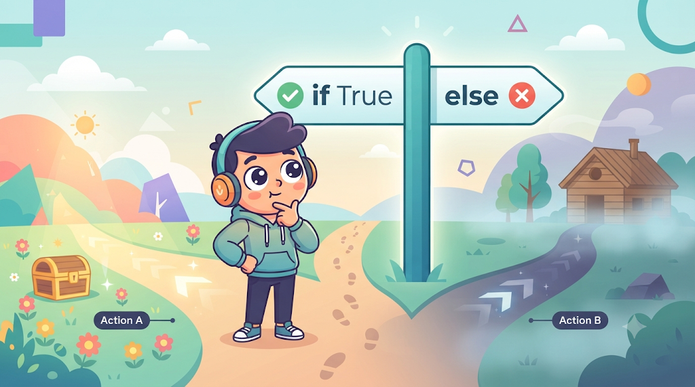
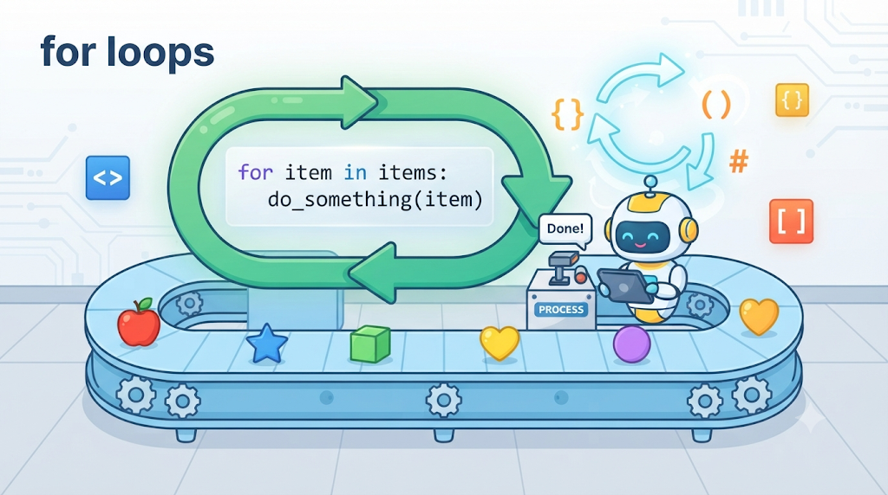
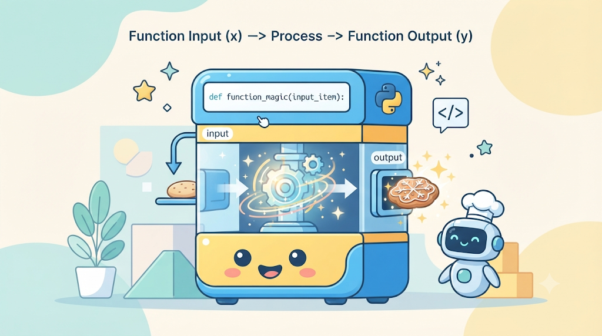

아래 코드가 화면에 보여 주는 것은 무엇일까요?
name = "민지" print(name)
처음이라 막막해도 괜찮아요. 짧은 설명과 코드 예시를 만나고, 퀴즈를 풀며 파이썬으로 할 수 있는 일을 발견해 봐요.
개념 4개 약 4분 · 퀴즈와 정리 포함 10분 이내
나중에 다시 쓰고 싶은 값에 이름을 붙여 보세요.

변수는 값을 담아 두는 이름표예요. name이라는 이름을 붙여 두면, 다음에 그 이름으로 값을 다시 꺼내 쓸 수 있어요.
실행 결과가 여기에 표시됩니다.
코드는 브라우저 안에서 실행돼요. Pyodide를 처음 불러올 때 인터넷 연결이 필요합니다.
내레이션 1 · 약 60초변수는 값을 담는 상자에 붙인 이름표라고 생각하면 돼요. name이라는 이름에 파이썬을 담아 두고, print로 다시 꺼내 화면에 보여 줄 수 있어요.
“만약 이렇다면”이라는 기준을 컴퓨터에게 알려줘요.

if는 조건이 참일 때만 안쪽 코드를 실행해요. 기준에 따라 다른 행동을 만들 수 있어요.
실행 결과가 여기에 표시됩니다.
내레이션 2 · 약 60초if는 “만약”이라는 뜻이에요. 점수가 80점 이상인지 확인하고, 맞으면 통과를 출력해요. 콜론 다음 줄을 들여쓰는 것도 기억해 주세요.
목록에서 하나씩 꺼내 같은 작업을 해요.

for는 목록의 항목을 하나씩 꺼내 같은 일을 반복해요. 여러 번 해야 할 일을 짧게 적을 수 있어요.
실행 결과가 여기에 표시됩니다.
내레이션 3 · 약 60초for는 목록의 항목을 하나씩 살펴봐요. 과일 목록에서 사과, 배, 포도를 하나씩 꺼내 print로 보여 주는 것처럼, 같은 일을 반복할 때 사용해요.
동작에 이름을 붙여 두고 필요할 때 불러요.

함수는 여러 줄의 동작을 묶어 이름을 붙인 작은 도구예요. 이름을 불러 같은 일을 다시 시킬 수 있어요.
실행 결과가 여기에 표시됩니다.
내레이션 4 · 약 60초함수는 자주 쓰는 동작을 묶어 둔 도구예요. say_hello라는 함수를 만들면, 이름을 바꿔 넣어 여러 사람에게 인사할 수 있어요.
정답을 선택하고 채점 버튼을 누르면 해설을 확인할 수 있어요.
name = "민지" print(name)
for fruit in ["사과", "배", "포도"]:
print(fruit)오늘 만난 네 가지 개념을 세 줄로 다시 볼게요.
Google 계정으로 브라우저에서 파이썬 코드를 실행할 수 있어요.
반복 작업을 자동화하고, 데이터에서 답을 찾고, 작은 앱을 만들 수 있어요. 시작은 내가 궁금한 질문 하나면 충분해요.
다음 프로젝트의 주인공은 여러분이에요.